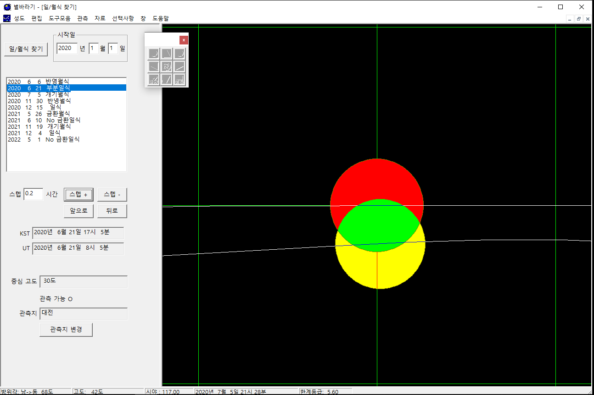

별바라기 홈 >
도움말
일/월식 찾기
일/월식 찾기 윈도에서는 특정일 이후에 발생하는 일식, 월식을 계산해 주며, 특정 일/월식에 대해 식의 진행 상황을 재현해 준다.
일/월식 찾기 윈도는 컨트롤 윈도와 시뮬레이션 윈도로 구성되어 있다.
|

|
|
일/월식 찾기 윈도: 2020년 6월 21일 부분일식 (관측지: 대전)
|
일/월식 찾기
일/월식을 찾기 위해서는 다음의 순서를 따른다.
- [입력][관측지...] 메뉴를 선택하여 관측지 정보를 정확하게 입력한다. 일/월식은 관측자의 위치(위도, 경도, 해발고도)에 따라 많은 차이가 난다.
따라서 관측지 자료를 정확하게 입력해야 한다. (시간 및 관측지 설정 참조)
- 시작일을 결정한다. 기본적으로 오늘의 날짜가 표시된다.
- '일/월식 찾기' 버튼을 누른다. 버튼을 누르면 아래의 목록 박스에 시작일에서부터 10개의 일/월식을 찾아준다.
이것은 지구상에서 일어나는 모든 일/월식에 대한 자료이므로 목록에 나타난 식이 우리나라에서 항상 관측 가능한 것은 아니다.
- 스텝 간격을 설정한다. 스텝+, 스텝- 버튼이 눌렸을 때 가감되는 시간이다.
- 스텝+/- 버튼을 누르면 스텝 간격에 표시된 시간만큼 식의 진행 사항을 전진 또는 후진시킨다.
- 일/월식 화면에 나타난 격자의 간격은 적경 30분, 적위 30분이다.
- 컨트롤 윈도의 고도를 보면 일/월식이 주어진 시간에 관측 가능한지 판단할 수 있다.
시뮬레이션 윈도
태양, 달, 지구 그림자의 모습이 표시된다. 빨간색 동그라미는 태양을, 노란색 동그라미는 달을 가리킨다.
회색 동그라미는 지구의 그림자를 가리키며 가운데 진한 부분은 본그림자이고, 가장자리의 엷은 색은 반그림자이다.
일식이 지구상에서 어떻게 진행되는지는 일식 지도보기를 참조하시오.
별바라기 홈 최초 작성: 2026년 11월 01일, 최종 변경: 2026년 11월 01일